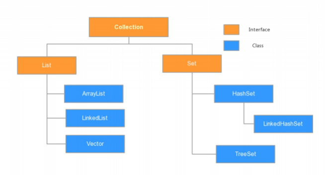
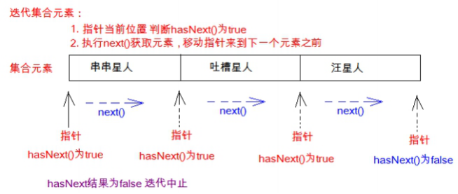

day02【Collection、泛型】主要内容教学目标第一章 Collection集合1.1 集合概述1.2 集合框架1.3 Collection 常用功能第二章 Iterator迭代器2.1 Iterator接口2.2 迭代器的实现原理2.3 增强for练习1：遍历数组练习2:遍历集合第三章 泛型3.1 泛型概述3.2 使用泛型的好处3.3 泛型的定义与使用定义和使用含有泛型的类含有泛型的方法含有泛型的接口3.4 泛型通配符通配符基本使用通配符高级使用----受限泛型第四章 集合综合案例4.1 案例介绍4.2 案例分析4.3 代码实现
能够说出集合与数组的区别
说出Collection集合的常用功能
能够使用迭代器对集合进行取元素
能够说出集合的使用细节
能够使用集合存储自定义类型
能够使用foreach循环遍历集合
能够使用泛型定义集合对象
能够理解泛型上下限
能够阐述泛型通配符的作用
在前面基础班我们已经学习过并使用过集合ArrayList
集合和数组既然都是容器，它们有啥区别呢？
JAVASE提供了满足各种需求的API，在使用这些API前，先了解其继承与接口操作架构，才能了解何时采用哪个类，以及类之间如何彼此合作，从而达到灵活应用。
集合按照其存储结构可以分为两大类，分别是单列集合java.util.Collection和双列集合java.util.Map，今天我们主要学习Collection集合，在day04时讲解Map集合。
java.util.List和java.util.Set。其中，List的特点是元素有序、元素可重复。Set的特点是元素无序，而且不可重复。List接口的主要实现类有java.util.ArrayList和java.util.LinkedList，Set接口的主要实现类有java.util.HashSet和java.util.TreeSet。从上面的描述可以看出JDK中提供了丰富的集合类库，为了便于初学者进行系统地学习，接下来通过一张图来描述整个集合类的继承体系。

其中，橙色框里填写的都是接口类型，而蓝色框里填写的都是具体的实现类。这几天将针对图中所列举的集合类进行逐一地讲解。
集合本身是一个工具，它存放在java.util包中。在Collection接口定义着单列集合框架中最最共性的内容。
Collection是所有单列集合的父接口，因此在Collection中定义了单列集合(List和Set)通用的一些方法，这些方法可用于操作所有的单列集合。方法如下：
public boolean add(E e)： 把给定的对象添加到当前集合中 。public void clear() :清空集合中所有的元素。public boolean remove(E e): 把给定的对象在当前集合中删除。public boolean contains(E e): 判断当前集合中是否包含给定的对象。public boolean isEmpty(): 判断当前集合是否为空。public int size(): 返回集合中元素的个数。public Object[] toArray(): 把集合中的元素，存储到数组中。方法演示：
ximport java.util.ArrayList;import java.util.Collection;public class Demo1Collection { public static void main(String[] args) { // 创建集合对象 // 使用多态形式 Collection<String> coll = new ArrayList<String>(); // 使用方法 // 添加功能 boolean add(String s) coll.add("小李广"); coll.add("扫地僧"); coll.add("石破天"); System.out.println(coll); // boolean contains(E e) 判断o是否在集合中存在 System.out.println("判断 扫地僧 是否在集合中"+coll.contains("扫地僧")); //boolean remove(E e) 删除在集合中的o元素 System.out.println("删除石破天："+coll.remove("石破天")); System.out.println("操作之后集合中元素:"+coll); // size() 集合中有几个元素 System.out.println("集合中有"+coll.size()+"个元素"); // Object[] toArray()转换成一个Object数组 Object[] objects = coll.toArray(); // 遍历数组 for (int i = 0; i < objects.length; i++) { System.out.println(objects[i]); } // void clear() 清空集合 coll.clear(); System.out.println("集合中内容为："+coll); // boolean isEmpty() 判断是否为空 System.out.println(coll.isEmpty()); }}tips: 有关Collection中的方法可不止上面这些，其他方法可以自行查看API学习。
在程序开发中，经常需要遍历集合中的所有元素。针对这种需求，JDK专门提供了一个接口java.util.Iterator。Iterator接口也是Java集合中的一员，但它与Collection、Map接口有所不同，Collection接口与Map接口主要用于存储元素，而Iterator主要用于迭代访问（即遍历）Collection中的元素，因此Iterator对象也被称为迭代器。
想要遍历Collection集合，那么就要获取该集合迭代器完成迭代操作，下面介绍一下获取迭代器的方法：
public Iterator iterator(): 获取集合对应的迭代器，用来遍历集合中的元素的。下面介绍一下迭代的概念：
Iterator接口的常用方法如下：
public E next():返回迭代的下一个元素。public boolean hasNext():如果仍有元素可以迭代，则返回 true。接下来我们通过案例学习如何使用Iterator迭代集合中元素：
xxxxxxxxxxpublic class IteratorDemo { public static void main(String[] args) { // 使用多态方式 创建对象 Collection<String> coll = new ArrayList<String>(); // 添加元素到集合 coll.add("串串星人"); coll.add("吐槽星人"); coll.add("汪星人"); //遍历 //使用迭代器 遍历 每个集合对象都有自己的迭代器 Iterator<String> it = coll.iterator(); // 泛型指的是 迭代出 元素的数据类型 while(it.hasNext()){ //判断是否有迭代元素 String s = it.next();//获取迭代出的元素 System.out.println(s); } }}tips:：在进行集合元素取出时，如果集合中已经没有元素了，还继续使用迭代器的next方法，将会发生java.util.NoSuchElementException没有集合元素的错误。
我们在之前案例已经完成了Iterator遍历集合的整个过程。当遍历集合时，首先通过调用t集合的iterator()方法获得迭代器对象，然后使用hashNext()方法判断集合中是否存在下一个元素，如果存在，则调用next()方法将元素取出，否则说明已到达了集合末尾，停止遍历元素。
Iterator迭代器对象在遍历集合时，内部采用指针的方式来跟踪集合中的元素，为了让初学者能更好地理解迭代器的工作原理，接下来通过一个图例来演示Iterator对象迭代元素的过程：

在调用Iterator的next方法之前，迭代器的索引位于第一个元素之前，不指向任何元素，当第一次调用迭代器的next方法后，迭代器的索引会向后移动一位，指向第一个元素并将该元素返回，当再次调用next方法时，迭代器的索引会指向第二个元素并将该元素返回，依此类推，直到hasNext方法返回false，表示到达了集合的末尾，终止对元素的遍历。
增强for循环(也称for each循环)是JDK1.5以后出来的一个高级for循环，专门用来遍历数组和集合的。它的内部原理其实是个Iterator迭代器，所以在遍历的过程中，不能对集合中的元素进行增删操作。
格式：
xxxxxxxxxxfor(元素的数据类型 变量 : Collection集合or数组){ //写操作代码}它用于遍历Collection和数组。通常只进行遍历元素，不要在遍历的过程中对集合元素进行增删操作。
xxxxxxxxxxpublic class NBForDemo1 { public static void main(String[] args) { int[] arr = {3,5,6,87}; //使用增强for遍历数组 for(int a : arr){//a代表数组中的每个元素 System.out.println(a); } }}xxxxxxxxxxpublic class NBFor { public static void main(String[] args) { Collection<String> coll = new ArrayList<String>(); coll.add("小河神"); coll.add("老河神"); coll.add("神婆"); //使用增强for遍历 for(String s :coll){//接收变量s代表 代表被遍历到的集合元素 System.out.println(s); } }}tips: 新for循环必须有被遍历的目标。目标只能是Collection或者是数组。新式for仅仅作为遍历操作出现。
在前面学习集合时，我们都知道集合中是可以存放任意对象的，只要把对象存储集合后，那么这时他们都会被提升成Object类型。当我们在取出每一个对象，并且进行相应的操作，这时必须采用类型转换。
大家观察下面代码：
xxxxxxxxxxpublic class GenericDemo { public static void main(String[] args) { Collection coll = new ArrayList(); coll.add("abc"); coll.add("itcast"); coll.add(5);//由于集合没有做任何限定，任何类型都可以给其中存放 Iterator it = coll.iterator(); while(it.hasNext()){ //需要打印每个字符串的长度,就要把迭代出来的对象转成String类型 String str = (String) it.next(); System.out.println(str.length()); } }}程序在运行时发生了问题java.lang.ClassCastException。为什么会发生类型转换异常呢？我们来分析下：由于集合中什么类型的元素都可以存储。导致取出时强转引发运行时 ClassCastException。怎么来解决这个问题呢？Collection虽然可以存储各种对象，但实际上通常Collection只存储同一类型对象。例如都是存储字符串对象。因此在JDK5之后，新增了泛型(Generic)语法，让你在设计API时可以指定类或方法支持泛型，这样我们使用API的时候也变得更为简洁，并得到了编译时期的语法检查。
tips:一般在创建对象时，将未知的类型确定具体的类型。当没有指定泛型时，默认类型为Object类型。
上一节只是讲解了泛型的引入，那么泛型带来了哪些好处呢？
通过我们如下代码体验一下：
xxxxxxxxxxpublic class GenericDemo2 { public static void main(String[] args) { Collection<String> list = new ArrayList<String>(); list.add("abc"); list.add("itcast"); // list.add(5);//当集合明确类型后，存放类型不一致就会编译报错 // 集合已经明确具体存放的元素类型，那么在使用迭代器的时候，迭代器也同样会知道具体遍历元素类型 Iterator<String> it = list.iterator(); while(it.hasNext()){ String str = it.next(); //当使用Iterator<String>控制元素类型后，就不需要强转了。获取到的元素直接就是String类型 System.out.println(str.length()); } }}tips:泛型是数据类型的一部分，我们将类名与泛型合并一起看做数据类型。
我们在集合中会大量使用到泛型，这里来完整地学习泛型知识。
泛型，用来灵活地将数据类型应用到不同的类、方法、接口当中。将数据类型作为参数进行传递。
定义格式：
xxxxxxxxxx修饰符 class 类名<代表泛型的变量> { }
例如，API中的ArrayList集合：
xxxxxxxxxxclass ArrayList<E>{ public boolean add(E e){ } public E get(int index){ } ....}使用泛型： 即什么时候确定泛型。
在创建对象的时候确定泛型
例如，ArrayList<String> list = new ArrayList<String>();
此时，变量E的值就是String类型,那么我们的类型就可以理解为：
xxxxxxxxxxclass ArrayList<String>{ public boolean add(String e){ } public String get(int index){ } ...}再例如，ArrayList<Integer> list = new ArrayList<Integer>();
此时，变量E的值就是Integer类型,那么我们的类型就可以理解为：
xxxxxxxxxxclass ArrayList<Integer> { public boolean add(Integer e) { } public Integer get(int index) { } ...}举例自定义泛型类
xxxxxxxxxxpublic class MyGenericClass<MVP> { //没有MVP类型，在这里代表 未知的一种数据类型 未来传递什么就是什么类型 private MVP mvp; public void setMVP(MVP mvp) { this.mvp = mvp; } public MVP getMVP() { return mvp; }}使用:
xxxxxxxxxxpublic class GenericClassDemo { public static void main(String[] args) { // 创建一个泛型为String的类 MyGenericClass<String> my = new MyGenericClass<String>(); // 调用setMVP my.setMVP("大胡子登登"); // 调用getMVP String mvp = my.getMVP(); System.out.println(mvp); //创建一个泛型为Integer的类 MyGenericClass<Integer> my2 = new MyGenericClass<Integer>(); my2.setMVP(123); Integer mvp2 = my2.getMVP(); }}定义格式：
xxxxxxxxxx修饰符 <代表泛型的变量> 返回值类型 方法名(参数){ }
例如，
xxxxxxxxxxpublic class MyGenericMethod { public <MVP> void show(MVP mvp) { System.out.println(mvp.getClass()); } public <MVP> MVP show2(MVP mvp) { return mvp; }}使用格式：调用方法时，确定泛型的类型
xxxxxxxxxxpublic class GenericMethodDemo { public static void main(String[] args) { // 创建对象 MyGenericMethod mm = new MyGenericMethod(); // 演示看方法提示 mm.show("aaa"); mm.show(123); mm.show(12.45); }}定义格式：
xxxxxxxxxx修饰符 interface接口名<代表泛型的变量> { }
例如，
xxxxxxxxxxpublic interface MyGenericInterface<E>{ public abstract void add(E e); public abstract E getE(); }使用格式：
1、定义类时确定泛型的类型
例如
xxxxxxxxxxpublic class MyImp1 implements MyGenericInterface<String> { public void add(String e) { // 省略... } public String getE() { return null; }}此时，泛型E的值就是String类型。
2、始终不确定泛型的类型，直到创建对象时，确定泛型的类型
例如
xxxxxxxxxxpublic class MyImp2<E> implements MyGenericInterface<E> { public void add(E e) { // 省略... } public E getE() { return null; }}确定泛型：
xxxxxxxxxx/* * 使用 */public class GenericInterface { public static void main(String[] args) { MyImp2<String> my = new MyImp2<String>(); my.add("aa"); }}当使用泛型类或者接口时，传递的数据中，泛型类型不确定，可以通过通配符<?>表示。但是一旦使用泛型的通配符后，只能使用Object类中的共性方法，集合中元素自身方法无法使用。
泛型的通配符:不知道使用什么类型来接收的时候,此时可以使用?,?表示未知通配符。
此时只能接受数据,不能往该集合中存储数据。
举个例子大家理解使用即可：
xxxxxxxxxxpublic static void main(String[] args) { Collection<Intger> list1 = new ArrayList<Integer>(); getElement(list1); Collection<String> list2 = new ArrayList<String>(); getElement(list2);}public static void getElement(Collection<?> coll){}//？代表可以接收任意类型tips:泛型不存在继承关系 Collection
之前设置泛型的时候，实际上是可以任意设置的，只要是类就可以设置。但是在JAVA的泛型中可以指定一个泛型的上限和下限。
泛型的上限：
类型名称 <? extends 类 > 对象名称只能接收该类型及其子类泛型的下限：
类型名称 <? super 类 > 对象名称只能接收该类型及其父类型比如：现已知Object类，String 类，Number类，Integer类，其中Number是Integer的父类
xxxxxxxxxxpublic static void main(String[] args) { Collection<Integer> list1 = new ArrayList<Integer>(); Collection<String> list2 = new ArrayList<String>(); Collection<Number> list3 = new ArrayList<Number>(); Collection<Object> list4 = new ArrayList<Object>(); getElement(list1); getElement(list2);//报错 getElement(list3); getElement(list4);//报错 getElement2(list1);//报错 getElement2(list2);//报错 getElement2(list3); getElement2(list4); }// 泛型的上限：此时的泛型?，必须是Number类型或者Number类型的子类public static void getElement1(Collection<? extends Number> coll){}// 泛型的下限：此时的泛型?，必须是Number类型或者Number类型的父类public static void getElement2(Collection<? super Number> coll){}按照斗地主的规则，完成洗牌发牌的动作。 具体规则：
使用54张牌打乱顺序,三个玩家参与游戏，三人交替摸牌，每人17张牌，最后三张留作底牌。
准备牌：
牌可以设计为一个ArrayList
发牌
将每个人以及底牌设计为ArrayList
看牌
直接打印每个集合。
xxxxxxxxxximport java.util.ArrayList;import java.util.Collections;public class Poker { public static void main(String[] args) { /* * 1: 准备牌操作 */ //1.1 创建牌盒 将来存储牌面的 ArrayList<String> pokerBox = new ArrayList<String>(); //1.2 创建花色集合 ArrayList<String> colors = new ArrayList<String>(); //1.3 创建数字集合 ArrayList<String> numbers = new ArrayList<String>(); //1.4 分别给花色 以及 数字集合添加元素 colors.add("♥"); colors.add("♦"); colors.add("♠"); colors.add("♣"); for(int i = 2;i<=10;i++){ numbers.add(i+""); } numbers.add("J"); numbers.add("Q"); numbers.add("K"); numbers.add("A"); //1.5 创造牌 拼接牌操作 // 拿出每一个花色 然后跟每一个数字 进行结合 存储到牌盒中 for (String color : colors) { //color每一个花色 //遍历数字集合 for(String number : numbers){ //结合 String card = color+number; //存储到牌盒中 pokerBox.add(card); } } //1.6大王小王 pokerBox.add("小☺"); pokerBox.add("大☠"); // System.out.println(pokerBox); //洗牌 是不是就是将 牌盒中 牌的索引打乱 // Collections类 工具类 都是 静态方法 // shuffer方法 /* * static void shuffle(List<?> list) * 使用默认随机源对指定列表进行置换。 */ //2:洗牌 Collections.shuffle(pokerBox); //3 发牌 //3.1 创建 三个 玩家集合 创建一个底牌集合 ArrayList<String> player1 = new ArrayList<String>(); ArrayList<String> player2 = new ArrayList<String>(); ArrayList<String> player3 = new ArrayList<String>(); ArrayList<String> dipai = new ArrayList<String>(); //遍历 牌盒 必须知道索引 for(int i = 0;i<pokerBox.size();i++){ //获取 牌面 String card = pokerBox.get(i); //留出三张底牌 存到 底牌集合中 if(i>=51){//存到底牌集合中 dipai.add(card); } else { //玩家1 %3 ==0 if(i%3==0){ player1.add(card); }else if(i%3==1){//玩家2 player2.add(card); }else{//玩家3 player3.add(card); } } } //看看 System.out.println("令狐冲："+player1); System.out.println("田伯光："+player2); System.out.println("绿竹翁："+player3); System.out.println("底牌："+dipai); }}